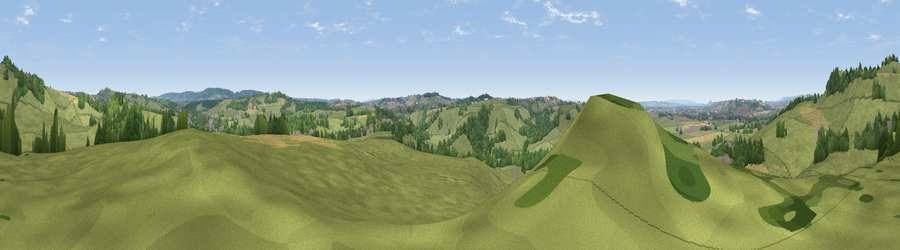

Viewpoint near Wyke Champflower
#20704 in England · top 43% of its area beats it · near Wyke ChampflowerWhere it is
The exact computed spot (ST 66875 34625). Click the marker for map links.
The view, rendered

A 360° render of this exact spot computed from the terrain model, tree cover and land cover — summer colours, afternoon light, calibrated against photographs of famous viewpoints. Real trees, hedges and buildings will differ in detail.
The panorama
Grey silhouette: terrain skyline in each direction (720 bearings, Earth curvature and refraction included). Dashed green: skyline with trees (+15 m) and buildings (+8 m) as obstacles. Blue strip: how far the ground is visible on each bearing.
Where the view opens
Wedge length = distance to the farthest visible ground on that bearing (vegetation-aware). Rings at 10, 25 and 50 km.
What fills the view
72% grassland · 15% woodland · 11% cropland · 2% built-up
Angular shares of the visible panorama (visual magnitude), not map area. Landscape diversity 0.37 (0–1 Shannon).
Key numbers
More beautiful places nearby
The staircase of upgrades: each row has a higher view potential than everything closer. Driving times are estimates from straight-line distance, calibrated against real road routing — check an actual route before setting out.
| Place | Direction | Drive | Score |
|---|---|---|---|
| Viewpoint near Lamyatt | N · 1 km | ~4 min | 77.8 |
| Viewpoint near Berwick St John | ESE · 29 km | ~46 min | 78.2 |
| Beacon Batch | NW · 29 km | ~46 min | 79.4 |
| Bleadon Hill [Loxton Hill] | NW · 38 km | ~56 min | 79.6 |
| Lewesdon Hill | SW · 41 km | ~60 min | 83.3 |
| Beacon Knap | SSW · 49 km | ~69 min | 84.8 |
| The Knoll | SSW · 49 km | ~70 min | 91.0 |
51.10996, -2.47456 · source: screening · position refined by local search. Computed location — check access rights before visiting.